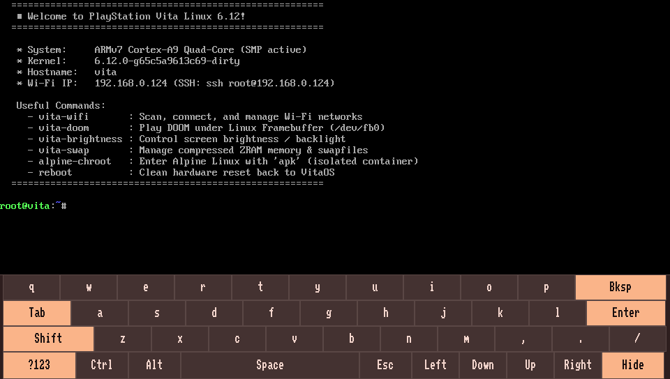

Transform Your PlayStation Vita Into A Full Linux Handheld
Experience native modern Linux 6.12 on your PS Vita without serial cables or tethered PCs. Featuring virtual touch typing, physical gamepad navigation, automated on-device Wi-Fi, compressed ZRAM swap, and full Alpine Linux package management.

From Tethered Proof-of-Concept to True Handheld Freedom
Early PS Vita Linux efforts proved the SoC could boot, but left users stranded with soldered UART serial wires and dead terminals. LinuxOnVita delivers a complete, consumer-ready handheld distribution.
Touchscreen Virtual Keyboard
Direct framebuffer on-screen typing with multi-touch digitizer integration. Dual ABC / ?123 symbol layouts, special function keys, and an instant hide toggle give you complete standalone terminal control.
fbkeyboard &
Physical Gamepad Navigation
Navigate the Linux shell using the Vita's physical D-Pad, face buttons, and shoulder triggers. Fixed active-low button masks and Syscon 0x180 analog stick sampling with calibrated deadbands via /dev/uinput.
vita-input-mapper &
Interactive On-Device Wi-Fi
Scan, select, and connect to Wi-Fi networks directly on the console with an interactive ASCII signal table. WPA2 credentials persist automatically to /mnt/ux0/linux/wifi.conf without needing a PC.
vita-wifi
Alpine Linux Package Ecosystem
Run thousands of standard ARMv7 packages inside a persistent Alpine Linux chroot. Use apk add to install Python 3, GCC, Git, Neovim, Tmux, Node.js, and CLI utilities with zero container overhead.
alpine-chroot
ZRAM Compression & Memory Safety
Zero-latency LZ4 compressed RAM swap expands usable memory from 512MB to ~768MB–1GB. Prevents Out-Of-Memory (OOM) crashes during package compilation, heavy Python tasks, or running memory-intensive scripts.
vita-swap status
Full 100% Display Brightness
Patched baremetal bootloaders boot both OLED (Vita 1000) and LCD (Vita 2000) panels at full 100% brightness. PS Vita 2000 Slim users enjoy runtime PWM dimming control across I2C bus 1 with vita-brightness.
vita-brightness set 80
Explore the LinuxOnVita Console
Click any command tab below to simulate the real interactive command-line experience running on PS Vita hardware.
# Displaying system architecture and active kernel vita:~# fastfetch _.-;;-._ root@vita '-..-'| || | ------------ '-..-'|_.-;;-._| OS: Alpine Linux v3.20 (armv7l) '-..-'| || | Host: Sony PlayStation Vita (PCH-1000/2000) '-..-'|_.-''-._| Kernel: Linux 6.12.0-vita-smp Uptime: 42 mins, 18 secs Shell: ash Display: 960x544 @ 60Hz (simplefb) CPU: ARM Cortex-A9 MPCore r2p2 (4 cores active SMP) Memory: 148MB / 498MB (RAM) + 256MB (ZRAM LZ4) Storage: /mnt/ux0 (SD2Vita) 119.2G / 238.5G vita:~# _
PS Vita Hardware Support & Drivers
Detailed hardware compatibility status for Sony PlayStation Vita (PCH-1000 OLED, PCH-2000 LCD, and PS TV).
| Component | Status | Implementation Details & Driver Notes |
|---|---|---|
| CPU (SMP Multiprocessing) | Working | Quad-core ARM Cortex-A9 MPCore with active Symmetric Multi-Processing (SMP) across all 4 cores. |
| Display (OLED / LCD Framebuffer) | Working | Native 960×544 framebuffer initialized at full 100% brightness (Level 15 Gamma on OLED; PWM backlight on LCD). |
| Backlight Control (PS Vita 2000) | Working (LCD) | Dynamic runtime PWM duty control via I2C bus 1 controlled by vita-brightness. |
| Wi-Fi (Marvell SD8787) | Working | mwifiex_sdio on SDIF2 with custom Ernie power sequencing and on-device vita-wifi manager. |
| Touchscreen Digitizer | Working | Multi-touch digitizer mapped via evdev; drives on-screen typing in fbkeyboard. |
| Gamepad Buttons & D-Pad | Working | Patched vita-buttons driver with uniform active-low mask and /dev/uinput shell mapping. |
| Analog Twin-Sticks | Working | Syscon 0x180 analog sampling enabled with deadzone filtering for smooth gamepad controls. |
SD2Vita Storage (ux0:) |
Working | Powered via Syscon 0x888, auto-mounted at /mnt/ux0 (/dev/mmcblk1p1). High-capacity microSD ready. |
Internal Storage (eMMC / ur0:) |
Working | Auto-detected SCE partitions (/dev/mmcblk0p1–p12), internal system partition mounted at /mnt/ur0. |
| ZRAM Memory Expansion | Working | 256MB compressed LZ4 RAM swap pool managed automatically by vita-swap. |
| Official Sony Memory Card | Bootloader Only | Boot binaries read by baremetal MSIF loader; runtime Linux MSIF storage driver not yet implemented. |
| 3D GPU Acceleration | Software Render | PowerVR SGX543MP4+ lacks open-source Linux kernel drivers. Full-speed 2D simplefb software rendering. |
| Audio Codec | In Progress | Proprietary Vita audio DAC currently lacks an active Linux ALSA driver. |
Quick Installation & First Boot
LinuxOnVita is packaged as an all-in-one LinuxOnVita.vpk for HENkaku / Ensō consoles.
Critical Prerequisite: Enable Unsafe Homebrew
Before launching, open Settings → HENkaku Settings → check Enable Unsafe Homebrew [✓]. If disabled, the loader plugin will exit with error 0x8002D003. An official physical Sony memory card is strictly required on all consoles to host the baremetal bootloader.
Download VPK
Grab LinuxOnVita.vpk from the official GitHub Releases page. This single package contains the kernel, bootloaders, device trees, and rootfs.
Transfer via VitaShell
Connect your PS Vita to your PC using USB or FTP in VitaShell. Copy LinuxOnVita.vpk to your memory card root (e.g. ux0:LinuxOnVita.vpk).
Install Package
In VitaShell, highlight LinuxOnVita.vpk and press CROSS (✕) to install. Accept the extended system permissions prompt.
1-Click Setup & Boot
Launch LinuxOnVita from the LiveArea. Select your Sony Memory Card partition (e.g., xmc0: or ux0:) and press CROSS (✕) to boot into Linux!
Updating an existing install? In the LinuxOnVita VPK menu, press SQUARE (□) to reinstall and update boot files on your memory card without overwriting your SD2Vita user data.
Thousands of Packages with Alpine Linux
With alpine-chroot, your PS Vita has access to standard ARMv7 packages via the lightweight apk package manager.
Python Web Services
Spin up microservices, local REST APIs, and HTTP file servers accessible across your local Wi-Fi.
apk add python3 && python3 -m http.server 8080
Native C/C++ Development
Compile native programs directly on the 4-core Cortex-A9 CPU with GCC, Clang, and Make.
apk add gcc g++ make musl-dev git
Terminal Productivity
Work comfortably with modern text editors and multi-window terminal multiplexers.
apk add neovim tmux htop curl
Remote SSH Terminal
SSH directly into your PS Vita from your MacBook, PC, or iPad using mDNS zero-config.
ssh root@vita.local
Frequently Asked Questions
Everything you need to know about safety, compatibility, memory cards, and usage.
LinuxOnVita.vpk). Your Sony official firmware, HENkaku/Ensō jailbreak, PS Vita games, save files, and plugins are completely untouched. Whenever you reboot the console, it returns straight to your standard LiveArea home screen.
zImage, device tree blobs) from a physical Sony card. Once Linux boots, SD2Vita adapters (/mnt/ux0) and internal eMMC partitions (/mnt/ur0) are fully active.
ux0:, and your official Sony Memory Card is typically remapped to xmc0: or uma0:. The LinuxOnVita VPK installer automatically scans your mounted partitions and highlights your Sony card. Simply select the Sony card partition and press CROSS (✕) to install the boot files.
vita-wifi utility. It scans nearby wireless networks and displays an interactive ASCII table of SSIDs with signal strength bars. Type the number of your network and enter your WPA2 password. Your credentials are automatically saved to /mnt/ux0/linux/wifi.conf so your Vita reconnects automatically on every subsequent boot.
reboot or poweroff in the terminal shell. Alternatively, hold the physical PS Vita power button for 5 seconds to cleanly shut down. Upon starting up, your Vita will boot straight into the normal PlayStation LiveArea.